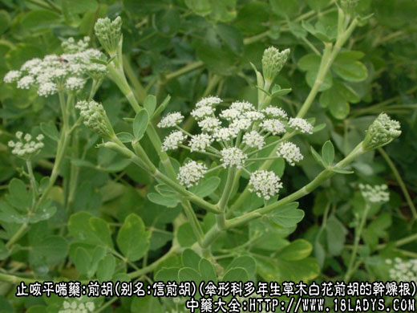
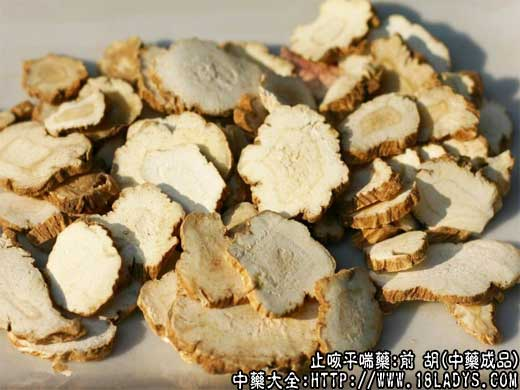
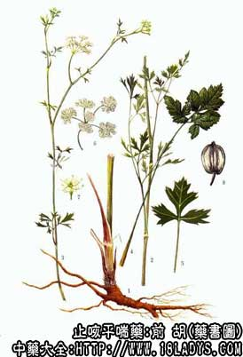

前胡为常用中药，《名医别录》列为中品。
别名：信前胡。
来源：为伞形科多年生草木植物白花前胡和紫花前胡的干燥根。多为野生。
产地：
白花前胡、紫花前胡：主产于浙江、湖南、四川、安徽等地，江苏、湖北、江西亦产。
性状鉴别：
白花前胡：主根性状不一，圆锥形、圆柱形或纺锤形。稍弯曲或有支根，细根多数已折断除去，长约3～9厘米，直径1～1.5厘米，根端有茎痕，外围有多少不等的残留叶鞘。木质部较小，肉质，易折断。断面黄白色，外表面黑褐色或黄褐色，有棕色圈。具香气，味先甜后苦辣。
紫花前胡：主根分歧或有侧根，主根长约3～15厘米，直径约0.8～1.7厘米。顶端有残留茎痕，表皮粗糙，褐色或黑褐色，有浅直的细纵皱纹，质坚实不易折断。断面不整齐，中心木质部较大，黄白色，气微芬香，带油腥气，味淡而后苦辣。
以根条肥状，黑皮、白肉、中心木质部黄色者为佳。
主要成分：含挥发油、及多种香豆素类化合物。
药理作用：下气化痰，疏散风热。
（1）祛痰。动物实验证实有显著增加呼吸道分泌的作用，祛痰效力与桔梗相当，但无显著镇咳作用。
（2）增加冠脉流量。离体心脏实验证明，白花前胡丙素能增加心冠脉流量，但不影响心率和心收缩力。
此外，还观察到有镇静作用。
炮制：切片生用。
性味：辛苦微寒。
归经：入肺经。
功能：散风清热，下气消痰。
主治：外感咳嗽，痰热喘满。
临床应用：
（1）治肺热咳嗽，表现痰稠气逆、胸闷烦热、舌苔黄腻（可见于急性气管炎等情况），用前胡祛痰，配桑白皮、贝母、杏仁等，方如前胡散。
（2）治风热感冒，有头痛、发热、鼻塞、涕流、咳嗽者，取其有疏散风热作用，常配牛蒡子、桔梗、薄荷等，方如感冒热咳方。
附：与柴胡比较。两者都能驱风邪，解胸腹胀闷。但前胡长于祛痰而降气，故感冒而咳逆明显者适用；柴胡长于解表舒肝，感冒而有寒热往来者适用，一般外感风邪如表现有咳嗽、气逆、痰粘稠、寒热往来、可前胡、柴胡合用。
用量：3～9g。
处方举例：
前胡散（《证治准绳》）：前胡6g，桑白皮6g，贝母9g，麦冬6g，杏仁6g，甘草3g，水煎服。
感冒热咳方：前胡9g，牛蒡子9g，桔梗6g，薄荷4.5g（后下），桑叶9g，荆芥9g，野菊花9g，北杏仁12g，甘草6g，水煎服。
注：
（1）前胡采收季节性很强，春季采者肉虚而瘦，秋季采者硬肉少，故以深秋及冬季收者肥壮结实为佳。
（2）全国大部分地区习用的前胡，主要为上述两种。由于生长形状、大小的不同，商品规格分为长条前胡、前胡头和统前胡三种，前一种多供出口。
（3）前胡有品种复杂，除上述白花、紫花前胡外，有些地区尚以多种同科同属和不同属植物的根作前胡用，如前胡属、当归属、牛防风属、藳本属......。在商品上，仅四川就有信前胡、光前胡、全胡、毛前胡、云前胡、白前胡等六种，性状各有不同。京津地区习销品，多来自浙江、安徽、湖南、湖北等地，与正文所述品种性状想符。